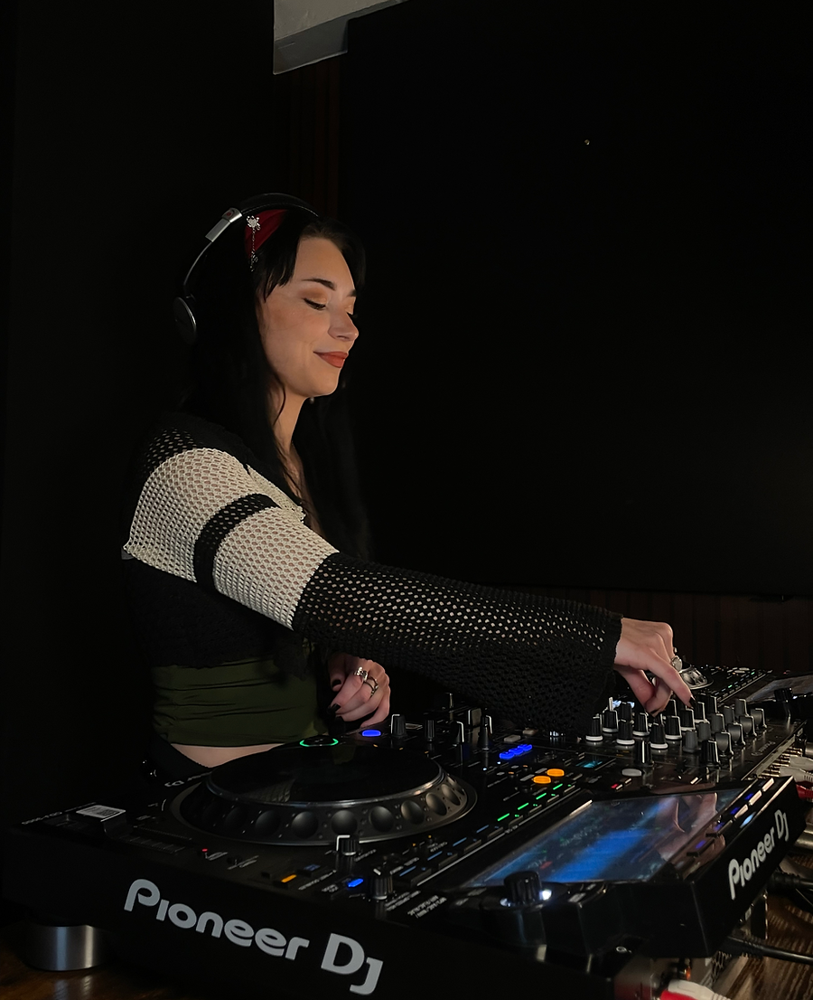
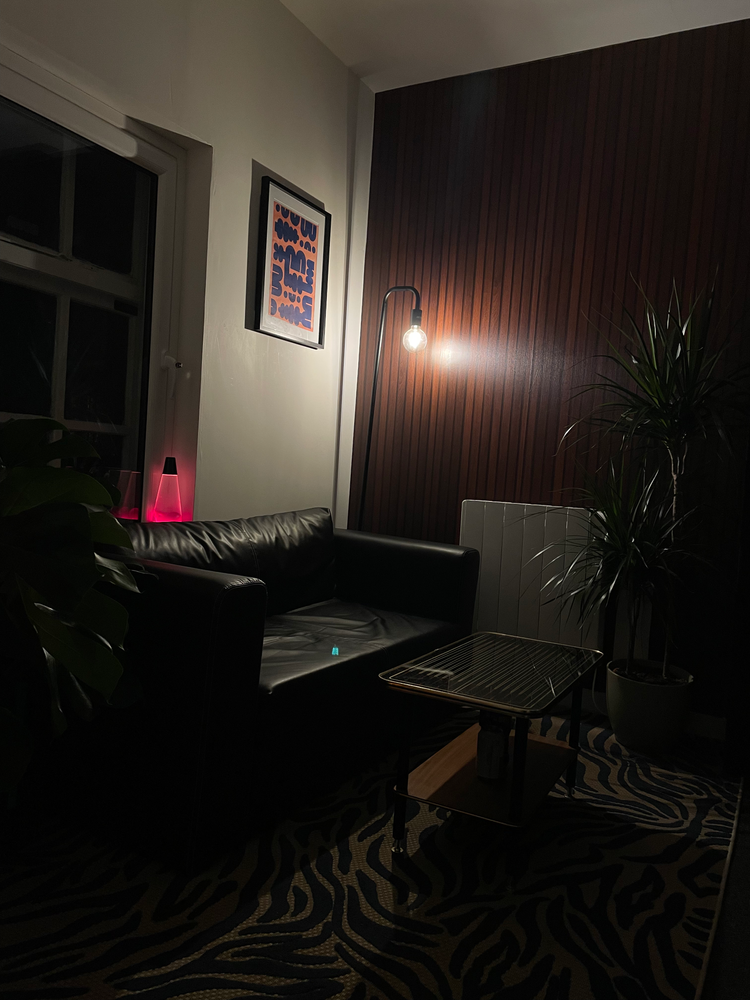
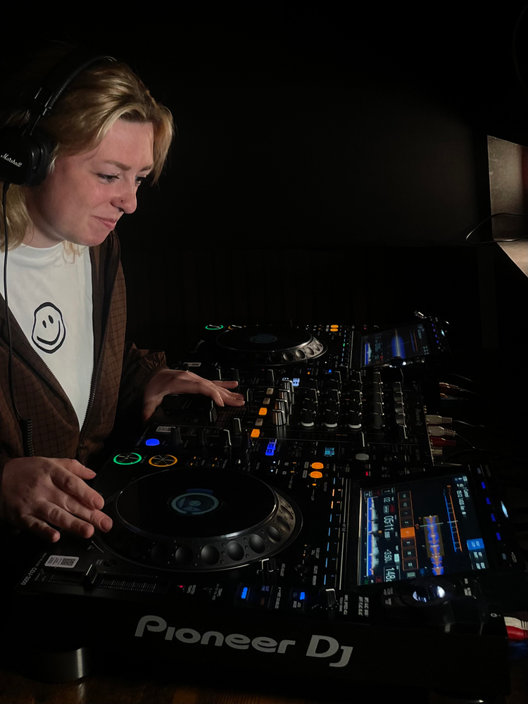
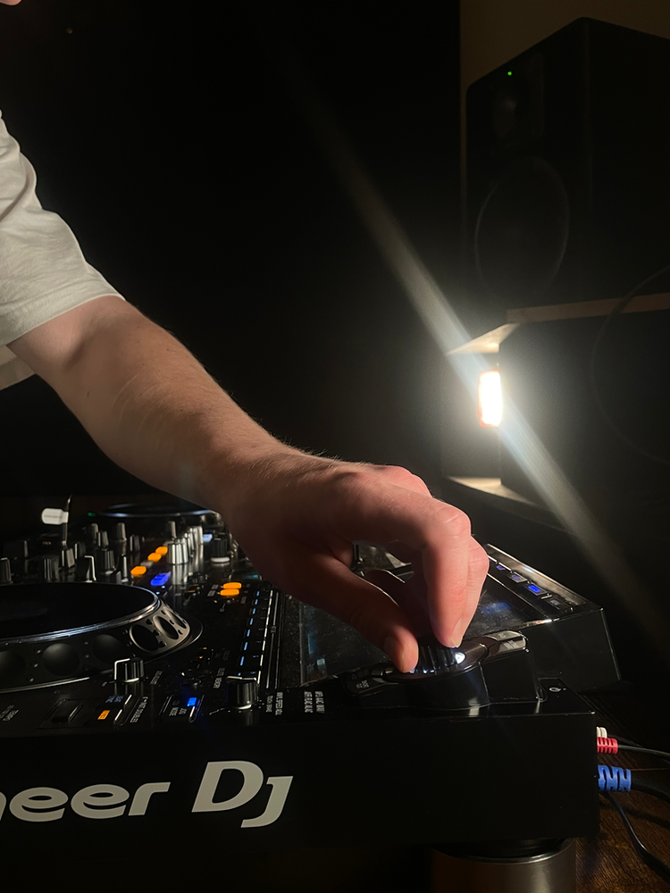
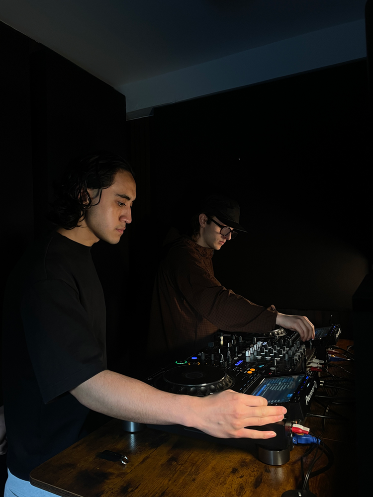
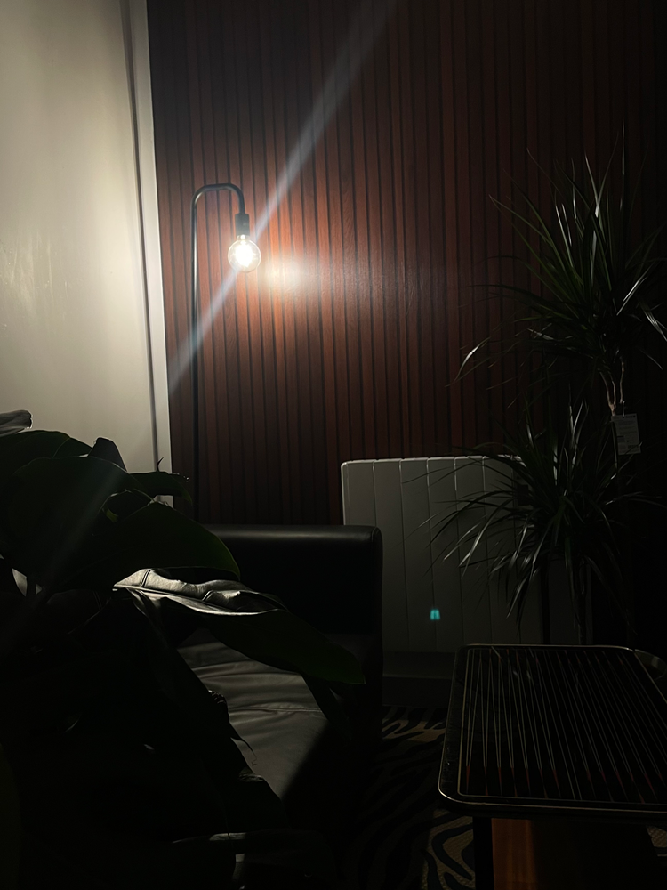
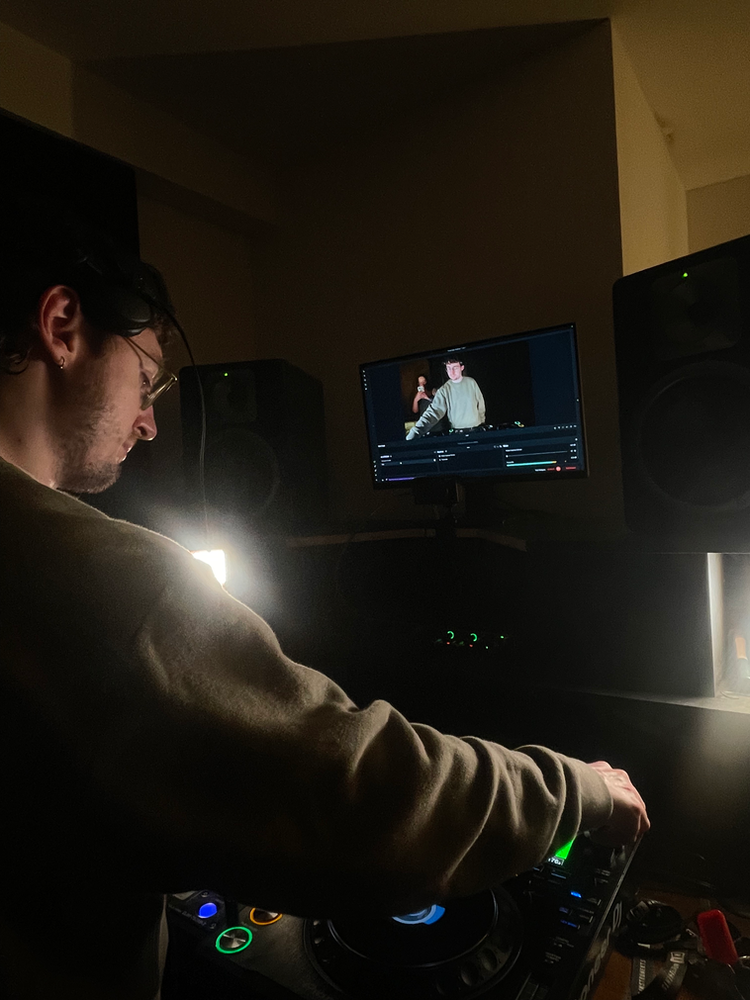

Based upon Bexley Square, tucked away on the edge of the city centre - the Club Curated DJ Studio offers a cosy, and safe space for artists and DJ's to practise their mixes, prepare for up coming sets, or that B2B that's finally made it out of chat.
Available for dry hire in two hour blocks, (priced at £25), the studio offers two CDJ 3000's, alongside a Pioneer DJM-750MK2 mixer.
Before making a booking, please check our studio hire, terms and conditions here.

DJ Studio Hire Information
Practice sessions give DJs and artists the opportunity to use our studio and practice on professional equipment. These sessions are ideal for improving your mixing skills, preparing for gigs, testing new music, or simply getting comfortable with club standard gear in a private studio environment.
Practice sessions are self led, meaning you’ll have the space to work independently and make the most of your booked time.
Our standard booking length is two hours. If you would like to arrange a session outside of this time, please contact us directly and we’ll do our best to accommodate.
Our practice sessions cost £25 for two hours. This is our standard fixed price for all sessions.
Yes, we allow up to three people per booked session, so you’re welcome to come with friends.
However, our studio is designed as a professional, community focused working space. We ask that all visitors respect the environment, and excessive partying or disruptive behaviour is not allowed.
Yes, you’re more than welcome to record the audio of your set during your session.
Audio can be recorded directly from the mixer to your phone using the Pioneer DJM recording app.
Unfortunately, we are not able to provide video recording as part of standard practice sessions. Our studio is also used as the home of our radio platform, Club Culture, which requires extensive setup and additional staffing. Because of this, the studio is wired specifically for broadcast use and we cannot allow external cameras or additional recording equipment to be set up during practice sessions.
If you’re looking to record a visual DJ set, you’re welcome to book a session on our broadcast platform. Alternatively, please email us directly and we’d be happy to discuss arranging a dedicated recording session with you.
Our studio is based on Bexley Square, Chapel Street, on the edge of Manchester City Centre (M3 6DB).
We’ve got two Pioneer CDJ-3000s and a four-channel Pioneer mixer, ready for you to plug in and play.
If you’d like to bring additional equipment (like an FX unit) please let us know in advance so we can confirm compatibility. You can email us via studio@clubcurated.co.uk and we will be in touch.
At the moment, the studio is digital / CDJ only, but we’re exploring options for vinyl in the future!
Just yourself, headphones, and your USB (maybe a spare - just in case!).
Our space is relaxed, inclusive, and creative. Built on good energy, collaboration, and community.
Please arrive 15 minutes before your session. We’ll welcome you into the waiting area, and around five minutes before your slot, we’ll take you upstairs to the studio so you can get settled before the start of your set.
Once your session is booked, you’ll receive an email with a contact number.
When you arrive at Bexley Square (you’ll know you’re there when you see the metal horse!), text the number — we’ll come down to greet you and let you in.
If you’re running late, please text us as soon as possible. Unfortunately we are not able to extend your allocated slot, due to following bookings.
If you cancel at least 48 hours in advance, we’ll issue a voucher so you can rebook.
If you can’t make it last minute, you’re welcome to transfer your slot to a friend or ask us to help fill it.
Our Mission:
Community has always been at the heart off Club Curated and our ethos; through community channels, monthly Open Decks and events. During November 2025, we relocated our studios to the historic Bexley Square, a creative hub tucked away within the vibrant city. With one purpose, to create a safe, and accessible space for artists & DJ's to accses.
Having experienced the lack of these spaces ourselves, as DJ's, it became our priority to build an environment that feels welcoming, thoughtfully designed, and properly cared for. Many detail's has been considered , from a height adjustable tables and cooling fans, to the smaller touches like mirrors and rugs - all to make the space as comfortable and practical as possible.
We're a grassroot space at heart, but one that Club Curated is proud to call home, we're privileged to share with the wider electronic music scene





